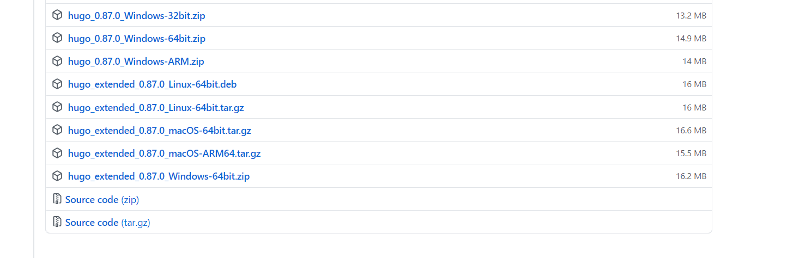

Hugo wowchemy（旧Academic）におけるbuilding siteエラー
エラー
Hugo wowchemyを使用しようとして、ビルドを実施したら次のエラーが発生。
D:\hugo\zatoima.github.io>hugo server
hugo: downloading modules …
go get: upgraded github.com/wowchemy/wowchemy-hugo-modules/wowchemy-cms/v5 v5.0.0-20210629192904-559885af86b7 => v5.0.0-20210811091031-81345fad46b5
go get: upgraded github.com/wowchemy/wowchemy-hugo-modules/wowchemy/v5 v5.0.0-20210629192904-559885af86b7 => v5.0.0-20210811091031-81345fad46b5
hugo: collected modules in 6776 ms
WARN 2021/08/23 20:18:56 Module "github.com/wowchemy/wowchemy-hugo-modules/wowchemy/v5" is not compatible with this Hugo version; run "hugo mod graph" for more information.
Start building sites …
hugo v0.84.0-2C4689F7B windows/amd64 BuildDate=2021-06-18T17:14:27Z VendorInfo=gohugoio
ERROR 2021/08/23 20:18:56 render of "home" failed: execute of template failed: template: index.html:5:3: executing "index.html" at <partial "site_head" .>: error calling partial: "C:\Users\imaza\AppData\Local\Temp\hugo_cache\modules\filecache\modules\pkg\mod\github.com\wowchemy\wowchemy-hugo-modules\wowchemy\v5@v5.0.0-20210811091031-81345fad46b5\layouts\partials\site_head.html:206:56": execute of template failed: template: partials/site_head.html:206:56: executing "partials/site_head.html" at <resources.Concat>: error calling Concat: resources in Concat must be of the same Media Type, got "text/x-scss" and "text/css"
ERROR 2021/08/23 20:18:56 render of "section" failed: execute of template failed: template: section/event.html:5:3: executing "section/event.html" at <partial "site_head" .>: error calling partial: "C:\Users\imaza\AppData\Local\Temp\hugo_cache\modules\filecache\modules\pkg\mod\github.com\wowchemy\wowchemy-hugo-modules\wowchemy\v5@v5.0.0-20210811091031-81345fad46b5\layouts\partials\site_head.html:206:56": execute of template failed: template: partials/site_head.html:206:56: executing "partials/site_head.html" at <resources.Concat>: error calling Concat: resources in Concat must be of the same Media Type, got "text/x-scss" and "text/css"
ERROR 2021/08/23 20:18:56 render of "page" failed: execute of template failed: template: _default/single.html:5:3: executing "_default/single.html" at <partial "site_head" .>: error calling partial: "C:\Users\imaza\AppData\Local\Temp\hugo_cache\modules\filecache\modules\pkg\mod\github.com\wowchemy\wowchemy-hugo-modules\wowchemy\v5@v5.0.0-20210811091031-81345fad46b5\layouts\partials\site_head.html:206:56": execute of template failed: template: partials/site_head.html:206:56: executing "partials/site_head.html" at <resources.Concat>: error calling Concat: resources in Concat must be of the same Media Type, got "text/x-scss" and "text/css"
ERROR 2021/08/23 20:18:56 render of "page" failed: execute of template failed: template: project/single.html:5:3: executing "project/single.html" at <partial "site_head" .>: error calling partial: "C:\Users\imaza\AppData\Local\Temp\hugo_cache\modules\filecache\modules\pkg\mod\github.com\wowchemy\wowchemy-hugo-modules\wowchemy\v5@v5.0.0-20210811091031-81345fad46b5\layouts\partials\site_head.html:206:56": execute of template failed: template: partials/site_head.html:206:56: executing "partials/site_head.html" at <resources.Concat>: error calling Concat: resources in Concat must be of the same Media Type, got "text/x-scss" and "text/css"
ERROR 2021/08/23 20:18:56 failed to render pages: render of "section" failed: execute of template failed: template: section/post.html:5:3: executing "section/post.html" at <partial "site_head" .>: error calling partial: "C:\Users\imaza\AppData\Local\Temp\hugo_cache\modules\filecache\modules\pkg\mod\github.com\wowchemy\wowchemy-hugo-modules\wowchemy\v5@v5.0.0-20210811091031-81345fad46b5\layouts\partials\site_head.html:206:56": execute of template failed: template: partials/site_head.html:206:56: executing "partials/site_head.html" at <resources.Concat>: error calling Concat: resources in Concat must be of the same Media Type, got "text/x-scss" and "text/css"
Built in 188 ms
Error: Error building site: TOCSS: failed to transform "main_parsed.scss" (text/x-scss). Check your Hugo installation; you need the extended version to build SCSS/SASS.
解決策
HugoのExtendedのバージョンを使用する必要があるという公式サイトの記事があった。
Frequently Asked Questions | Hugo https://gohugo.io/troubleshooting/faq/#i-get-tocss--this-feature-is-not-available-in-your-current-hugo-version
I get “TOCSS … this feature is not available in your current Hugo version”
If you process
SCSSorSASStoCSSin your Hugo project, you need the Hugoextendedversion, or else you may see this error message:error: failed to transform resource: TOCSS: failed to transform "scss/main.scss" (text/x-scss): this feature is not available in your current Hugo versionWe release two set of binaries for technical reasons. The extended version is not what you get by default for some installation methods. On the release page, look for archives with
extendedin the name. To buildhugo-extended, usego install --tags extendedTo confirm, run
hugo versionand look for the wordextended.
下記から使用するバージョンのバイナリ（hugo_extended_x.xx.x_xxxx）をダウンロードして、既存のHugoのバイナリと置き換えて再ビルドを行う。

関連しているかもしれない記事